Sample refactoring to a RESTful service
Before you start modifying the provided code, here is a short illustration of your upcoming tasks.
Task Illustration
In both of your tasks you will convert an existing java application to a RESTful service. This activity is also called RESTify or RESTification.
- A REST application is a service that exposes functionality over a a network protocol:
- The service creates the illusion of offering all functionality through CRUD operations on resources.
This is a bit like file system access where you can Create, Read, Update or Delete files.
However, access is not through a file system, but though the HTTP protocol. - A resource is identified by its URL (*Unique Resource Location). It looks e.g. like this:
http://127.0.0.1:8080/zoo/animalshttpspecifies the protocol to reach this resource127.0.0.1:8080sets physical location of the target machine and the port running the REST service.zoo/animalsis the location of a resource, offered by the running REST service.
- A REST interface is always an abstraction of the actual implementation, and should not be confused with RMI (Remote Method Invocation) where existing methods are called as-they-are over network.
- The service creates the illusion of offering all functionality through CRUD operations on resources.
- At the start of each task I will provide you with the tools for this process and illustrate the requests activity on a sample application, the Zoo.
The Sample Application (Zoo)
The Zoo is a minimal java desktop application that offers some demo functionality, namely:
- Looking up the Zoo's opening hours.
- Looking up all names of Zoo animals.
- Looking up details for a specific animal, identified by name.
- Adding a new animal to the Zoo.
The above functionality is all provided by a singleton class: Zoo.
- For convenience, here is a class diagram of the
Zooclass:

- You can also inspect the DesktopLauncher, to see how to invoke above methods.
- Finally you can also run the provided Zoo implementation as is, to see a demo of above functionality:
- Open a terminal in your cloned Zoo project
- Type:
mvn clean package exec:java
The Zoo REST interface description
The RESTification of an application (e.g. the Zoo) requires an interface description. An interface description tells you:
- The expected arrangement of REST resources, and also their individual locations.
- Which methods (
Get,Put,Post,Delete) are supported per resource. - What happens when a REST resource method was called, and how required parameters are provided.
For example for the Zoo the interface description could look like this:
- Your interface should begin with a top-level resource "zoo", not offering any methods.
- "zoo" should have two subresources, "animals" and "openinghours", both offering a [GET] method.
- A [GET] request to "animals" should return the list of all animal names in the zoo.
- A [GET] request to "openinghours" should return a description of the zoo's opening hours during the week and on weekends.
- The "animals" resource should have a single dynamic placeholder subresource representing a specific animal, identified by name. Name it e.g. "animalname". This dynamic subresource should offer a [Get] and a [Put] method.
- A [GET] request to the dynamic placeholder subresource should provide details on the given animal, identified by the value of the dynamic resource, i.e., the name of the animal (which serves as input parameter).
- A [PUT] request to the dynamic placeholder subresource should allow adding a new animal to the zoo. The name of the new animal is again specified by the value of the dynamic resource, while further details on the animal are passed as request body payload.
Your task will be to formalize the provided interface description, and establish a semantic mapping on existing functionality and parameters.
It's a good practice to have the textual description open throughout your task. For your convenience the Zoo description also is available as separate file (as will be the case for the descriptions you'll work with throughout your tasks).
RESTifying the Zoo
I will now illustrate the steps of a manual conversion to a RESTful service on the example of the Zoo.
I will use the previously shown Zoo REST interface description.
Afterwards, your task will be to apply the same methodology on a different application. Your task is not to replicate the Zoo conversion while you are watching.
- Please watch this screencast where I demonstrate and explain the required code changes.
- Below you find a summary of the main steps.
- If anything does not work as expected, take a look at the Troubleshoot section.
- Additionally you can conveniently inspect both versions and the changes made:
- Switch to Desktop Zoo version:
git checkout masteror inspect code online. - Switch to RESTified Zoo version:
git checkout RESTifiedor inspect code online. - Compare versions:
git diff master..RESTifiedor inspect changes online.
- Switch to Desktop Zoo version:
Project Layout Overview
A manual RESTification is a series of five activities:
- Loading of legacy sources into Integrated Development Environment (IntelliJ IDE)
- Adjustment of the build configuration file:
pom.xml - Replacement of the launcher class
- Removal of singleton pattern or creation of proxy controllers
- Decoration of REST controllers and target functions with Spring annotations
Loading Legacy Sources into IDE
- Start IntelliJ.
- Use the "Open" option to get to the selection dialogue: 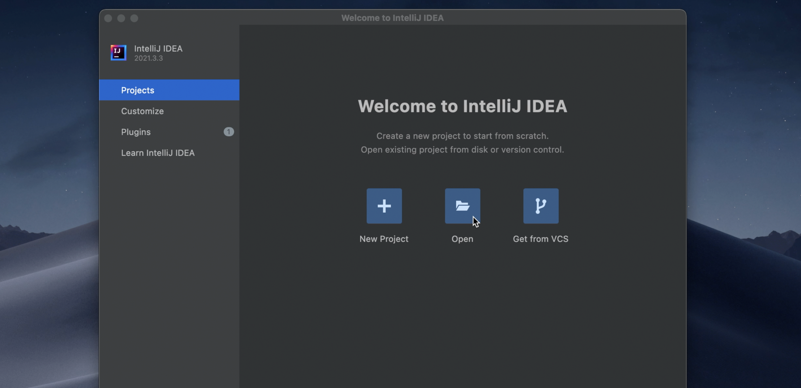
- Select the cloned project root folder, then click the "Open" button:
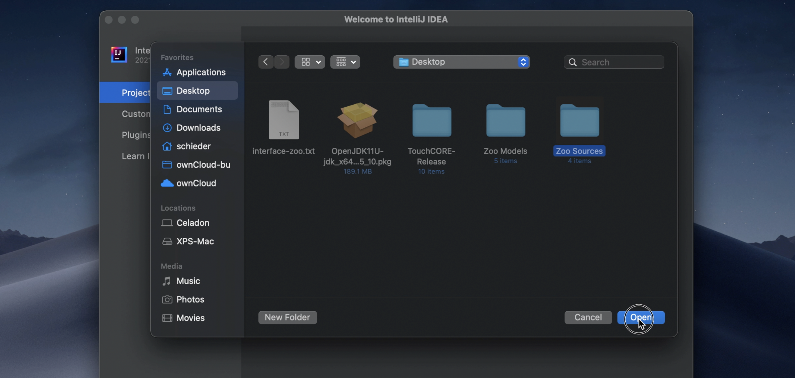
Build Configuration Changes
Want to see all Zoo-RESTify
pom.xmlchanges at a glance? Rungit diff master..RESTified pom.xml. Green lines were added for RESTification, red lines were removed.
- Artifact properties:
- Adjust
artifactId. Change suffix to "restified" - Adjust
name. Change suffix to "restified"
- Adjust
- Update developer information:
- Remove the
emailandorganizationUrllines - Change
nameto your name, e.g. "max schiedermeier" - Change
organizationto "mcgill.ca"
- Remove the
- Parent:
- Declare inheritance from spring boot parent.
Place below snippet right after the<license>...</license>block:
- Declare inheritance from spring boot parent.
- Dependencies:
- Declare dependency towards spring boot artifact:
- Declare dependency towards spring boot artifact:
- Final Name
- Add "Restified" as suffix to the
finalNameattribute value
- Add "Restified" as suffix to the
- Build plugins:
- Remove plugin for legacy launcher class:
<!-- specify main class for exec goal --> <plugin> <groupId>org.codehaus.mojo</groupId> <artifactId>exec-maven-plugin</artifactId> <version>1.6.0</version> <executions> <execution> <goals> <goal>java</goal> </goals> </execution> </executions> <configuration> <mainClass>eu.kartoffelquadrat.zoo.DesktopLauncher</mainClass> </configuration> </plugin> - Remove plugin for legacy compilation to self contained JAR:
<!-- specify main class for JAR manifest--> <plugin> <groupId>org.apache.maven.plugins</groupId> <artifactId>maven-jar-plugin</artifactId> <version>3.2.0</version> <configuration> <archive> <manifest> <mainClass>eu.kartoffelquadrat.zoo.DesktopLauncher</mainClass> </manifest> </archive> </configuration> </plugin> - Add plugin for spring-boot launcher class: (Don't create the new launcher class yet!)
Don't forget to adapt themainClasstag!
<!-- Spring specific build plugin, produces self contained JAR with default launcher class.--> <plugin> <groupId>org.springframework.boot</groupId> <artifactId>spring-boot-maven-plugin</artifactId> <configuration> <fork>true</fork> <!-- Replace "zoo" by actual package name in next line! --> <mainClass>eu.kartoffelquadrat.zoo.RestLauncher</mainClass> </configuration> <executions> <execution> <goals> <goal>repackage</goal> </goals> </execution> </executions> </plugin>
- Remove plugin for legacy launcher class:
Note: Some changes might note take full effect until you manually reload the
pom.xmlfile. To do so, right click thepom.xmlfile and select:Maven -> Reload Project
Java Code Changes
Hint: You can use
gitto see alljavachanges made to the Zoo for manual RESTification.
Run:git diff master..RESTified *java
Green lines were added for RESTification, red lines were removed.
Remove conflicting files
You have to delete two things:
- The legacy launcher, located in
src/main/java/eu/karotffelquadrat/*/DesktopLauncher.java - The legacy unit tests. Remove the entire test folder:
src/test
(This part has been skipped in the Zoo explanatory video, since there were no test classes)
Launcher
First thing to do is the creation of a new launcher class. It should be placed anywhere within the src/main/java/eu/kartoffelquadrat/... directory.
-
Create it by right clicking on the
eu.kartoffelquadrat...package:
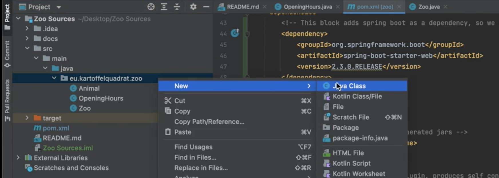 -
Enter
RestLauncheras class name, do not type the.javaextension. IntelliJ will handle that for you.
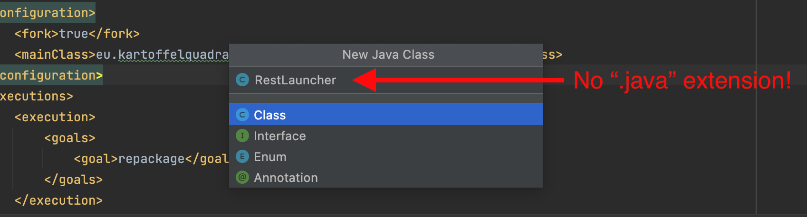
Code of the RestLauncher.java class. (Replaces the legacy launcher)
Beans and Singletons
- Spring creates new instances of classes annotated with:
- The existing singleton pattern is bypassed, since Spring uses reflection to gain constructor access, even if the declared constructor is private.
- Having both
@RestControllerand agetInstancemethod in the same class is dangerous.
There are two ways to side-step inconsistency issues:
- If you chose Autowiring, you do not create new classes. You directly annotate the relevant existing classes with
@RestController. - This tells Spring to create one instance per annotated class, using a default constructor.
- Any existing singleton pattern is therefore obsolete: If you annotated a class with
@RestController, make sure to remove the singleton pattern (thegetInstancemethod) and make the default constructor public. - Whenever an instance of such an annotated class is required, you can obtain the spring maintained instance with
@Autowired.
Example:Autowired fields are only accessible after class instantiation. Do not invoke methods that require autowired values from a constructor, or you will get a
NullPointerExceptionat runtime. Instead annotate those methods with@PostConstruct. This advises spring to invoke a method after class instantiation.
- If you chose Proxy Classes, you do annotate the existing classes. You instead replicate every existing relevant class and place all annotations in the replica. The replica acts as proxy that forwards every method call to the original, using
getInstance(). - Keep the singleton pattern in the original java classes. They remain untouched. Instead place an
@RestControllerannotation in every proxy class created.
Example:
Resource Mapping with Annotations
Note: Below annotation syntax can only be used in classes annotated with
@RestController.
-
Resource mappings (these annotations decorate functions)
- Annotations types:
Get Put Post Delete @GetMapping("...")@PutMapping("...")@PostMapping("...")@DeleteMapping("...")- Arguments:
- Static: Full resource path within quotes, e.g.:
"zoo/animals" - Dynamic: Full resource path within quotes. Any dynamic placeholder on path is marked by curly brackets, e.g.:
"zoo/animals/{animalname}"
- Static: Full resource path within quotes, e.g.:
-
Parameter mapping (these annotations decorate function parameters)
- Pathvariable:
@PathVariable("animalname") - Request body:
@RequestBody
- Pathvariable:
Build and Run
These instructions are to build and run from command line. While developing in IntelliJ you can safly use the "green triangle button" next to your new spring launcher class.
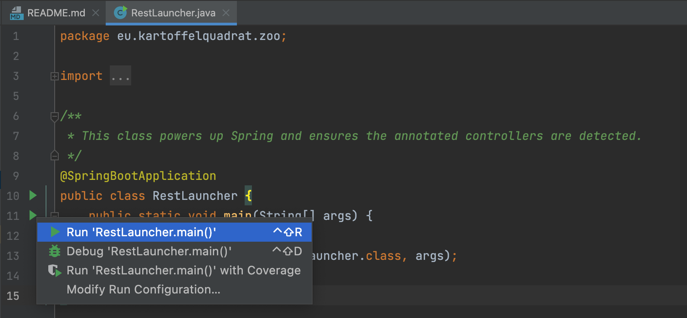
The first time you start your REST application you might see a warning about incoming connections. Select "Allow". 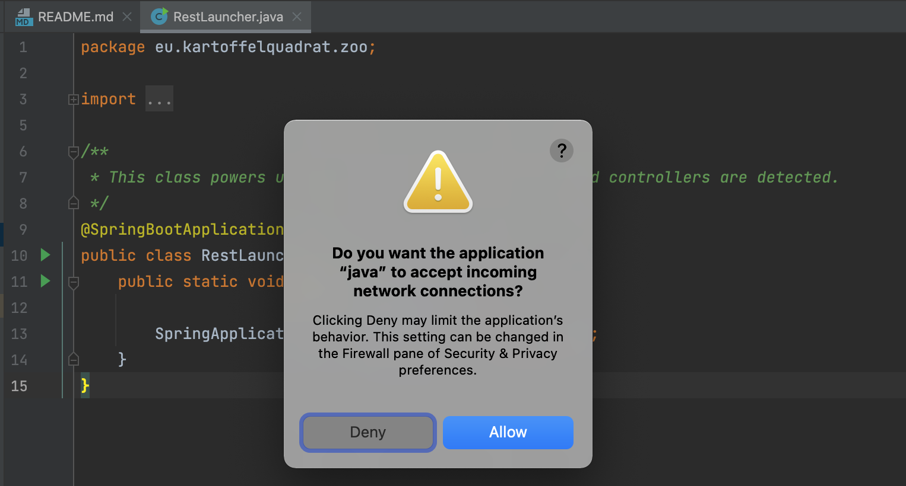
At some point you also need to build your application into a self contained artifact:
- Build a self contained executable jar file:
mvn clean package - Run the jar file:
java -jar target/zoorestified.jarzoorestifiedis the name you provided asfinalNamein yourpom.xml.
- Build a self contained executable jar file:
mvn clean package - Run the jar file:
java -jar target\zoorestified.jarzoorestifiedis the name you provided asfinalNamein yourpom.xml.
Compile and Test
To compile and test your produced REST service:
- Compile your project with:
mvn clean package - Open the newly generated
targetfolder. - Run the generated JAR file with:
java -jar YOUR-SERVICE-NAME.jar - Test access with your browser. You can directly access any [GET] resource by typing this into the URL bar:
http://127.0.0.1:8080/zoo/animals
(wherezoo/animalsis replaced by a valid GET-enabled resource of your application)
Troubleshoot
- Q: I open the project with IntelliJ, but everything is underlined in red.
A: The projet was not correctly opened. There are multiple potential fixes:
Option 1) Reloadpom.xml: Right click the file, then selectMaven -> Reload Project.
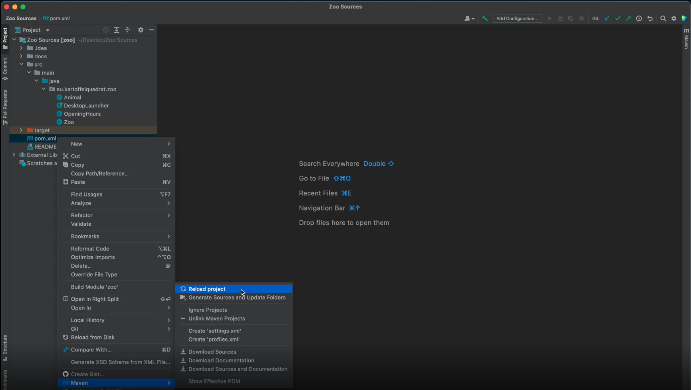 Option 2) Verify the JDK version: SelectFile->Project Structure.... Verify11.0.5is selected in the Project and SDKs tab:
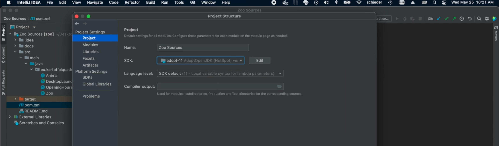
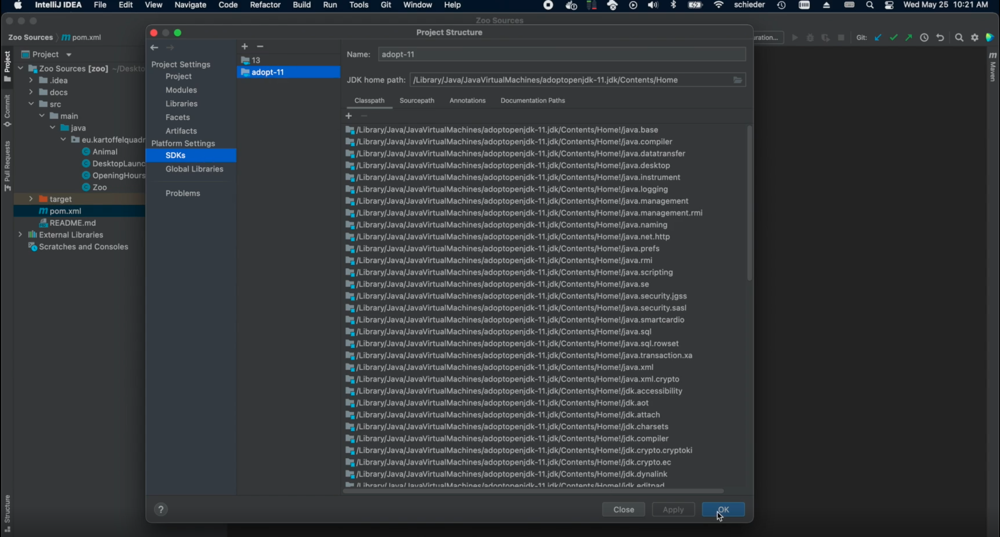
Option 3) Invalidate IntelliJ caches: SelectFile->Invalidate Caches.... Then select the first two checkboxes:
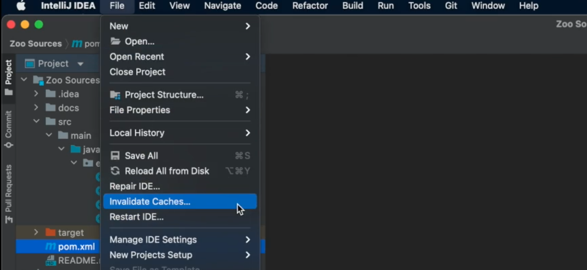
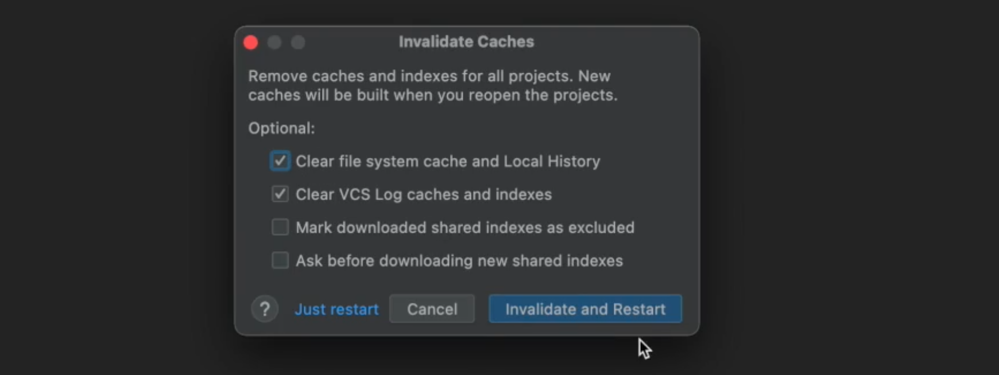 Option 4) Delete the cloned folder, clone the repository again, then make sure to open the project exactly as shown. - Q: I cannot compile / run the project, the green button is greyed out.
A: The project has no launch configuration by default, therefore the arrow in the top bar is not available. Open theRestLauncherclass instead and click on one of the green triangles, left of the code. - Q: I RESTified the application, but when I start it there is a Nullpointer-Exception.
A: Most likely the constructor code in one of the classes annotated with@RestControllerinvokes a call to an@Autowiredfield. Autowiring is only available after class initialization (after the constructor). Do not call any method with access to autowired fields in a constructor. Instead tell spring to call it after class initialization. Use the@PostConstructannotation. See@PostConstruct. - Q: I've made a mistake on project import, how can I start from scratch?
Delete the cloned folder, clone the repository again, then make sure to open the project exactly as shown. - Q: I've modified the
pom.xmlfile as shown, but IntelliJ still does not seem to know about Spring.
A: Sometimes the changes made to thepom.xmlare not automatically detected. (See first question,pom.xmlreload```.) - Q: IntelliJ asks me whether I want to trust the project sources. Should I?
A: Yes. This is just a security mechanism to prevent malicious code being executed on project import. The provided sources are all from us and can be trusted.
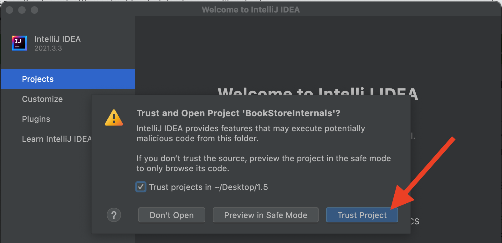